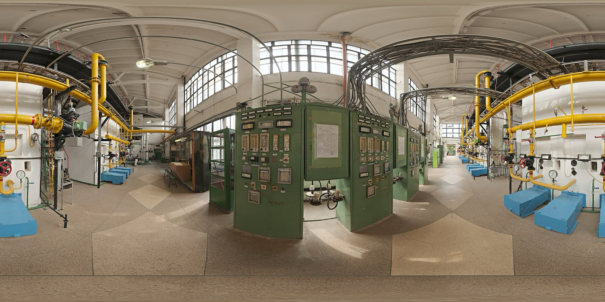

WhatsApp in.
Paperwork done.
Your technicians already use WhatsApp. QualiK Field turns their voice notes and photos into service reports and mandatory documents, ready for you to sign.
Try it in your businessWatch three messages from a job become a finished report, or send them yourself. Sample data.

Service report
- Job
- Heat pump maintenance
- Site
- Via Roma 12, Treviso
- System
- Air-to-water heat pump, 8 kW
- Work done
- Cleaned outdoor coil, leak check on refrigerant circuit, no leak found
- Materials
- Filter × 1
- Hours
- 1.5 h
- Serial no.
- 4471-22-0931
- Service reportReady for the office
- F-Gas notificationData ready
- Plant logbookUpdate ready
Jobs get done. Paperwork doesn't.
Forms stay blank.Technicians don't fill in forms on site. They have a boiler open and a customer waiting.
Paperwork falls behind.Mandatory documents pile up in the office and get written days later, from memory.
Quotes are guesswork.Nobody recorded the hours and materials of the last similar job, so the next price is a guess.
Contracts get lost.Maintenance visits and service contracts slip, because nothing reminds you they are due.
How it works
Where the work happens. The paperwork should not have to.
- First, the technician sends photos and a voice note.
On WhatsApp, as they already do. There is no app to install and no form to fill in on site.
- Then QualiK Field fills in the service report.
If something is missing, it asks straight away, while the technician is still on site.
- The office checks and approves.
Your business signs and submits. QualiK Field prepares the documents; it never signs for you.
- Every job stays in the history.
By customer and by installation, ready for the next visit and the next quote.
What it prepares, by trade
- Service reportFilled in from the voice note and the photosReady to sign
- F-Gas notificationData ready within the 30 days after the jobData ready
- Plant logbookUpdate prepared for the installation's logbookUpdate ready
- Service reportFilled in from the voice note and the photosReady to sign
- Plant logbook and inspection reportPrepared from the readings the technician sendsReady to sign
- Inspection remindersThe next inspection, by installationScheduled
- Service reportFilled in from the voice note and the photosReady to sign
- Declaration of conformity (DM 37/08)With the materials report attachedReady to sign
- Service reportFilled in from the voice note and the photosReady to sign
- Declaration of conformity (DM 37/08)With the materials report attachedReady to sign
- Archive of declarationsEvery declaration, filed by customerFiled
- Periodic-inspection remindersFor your business customersScheduled
QualiK Field prepares each document. Your business checks, signs and submits it.
For every trade: hours and materials recorded for your quotes, recurring maintenance kept on schedule, and a history for each installation.
With QualiK Field, and without
The same job, written down once, by the person who did it.
| Without QualiK Field | With QualiK Field |
|---|---|
| Job | Job |
| Notes from memory | Photo and voice note |
| Calls to the office | Report ready |
| Late paperwork | Paperwork signed and submitted on time |
| Guesswork quote | History for the next quote |
What stays with you
- Signing and submitting stay with your business.QualiK Field prepares the documents. You check them, sign them and send them.
- Customer data is handled under GDPR.Your customers' details are used to prepare your documents and for nothing else.
- Jobs are recorded. Technicians are not monitored.The system keeps what was done on each installation, not where your people are or how they spend their day.
Maintaining machines in a factory?
QualiK gives every maintenance technician the procedure and its source the moment a machine stops, and writes the service report.
See QualiK for industryA team of 2 to 15?Try it on your next job.
Leave your details and we will set it up with you on WhatsApp. Your technicians install nothing.
We use your details only to reply to you.